Identitate
2019. En colaboración con Maddi Goikoetxea. Retratos basados en un relato escrito por nosotros sobre una mujer que debe escapar de su ciudad natal antes de convertirse por completo en su madre. La idea de 'escapar' como sinónimo de mantenerse en el estado consciente en la búsqueda de la identidad propia, el reconocimiento de lo que nos conforma, y las cuestiones respecto a lo que significa ser nosotros mismos. 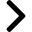
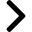
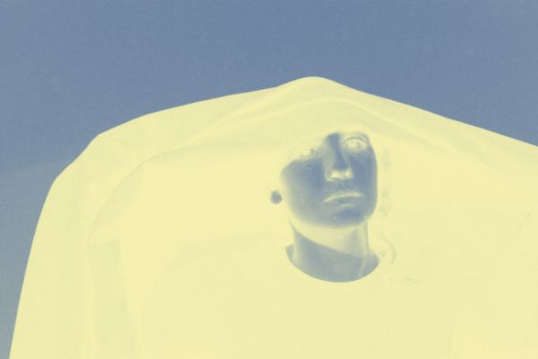
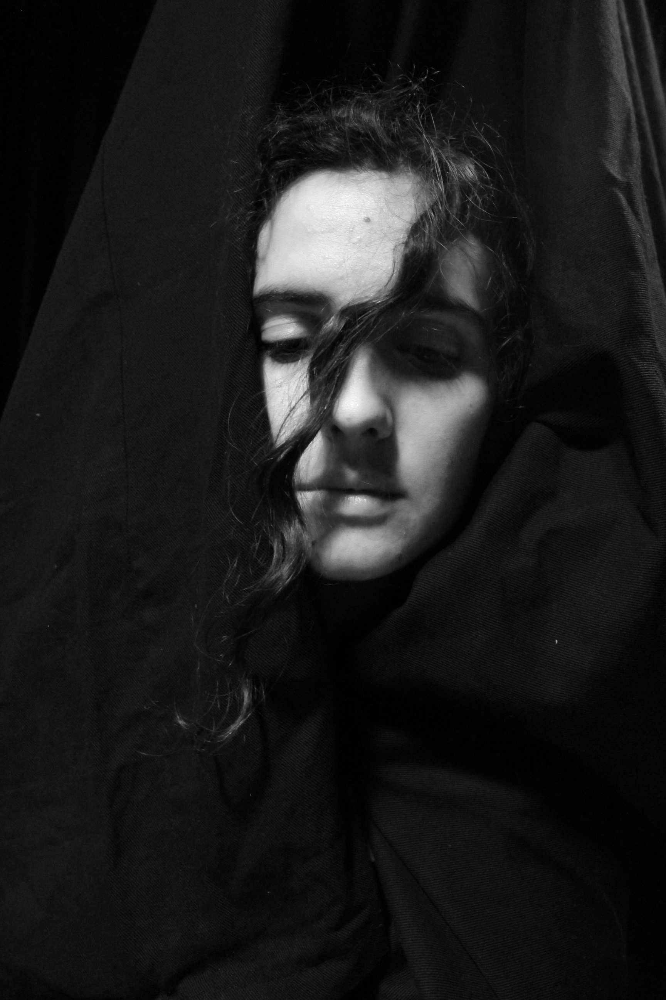
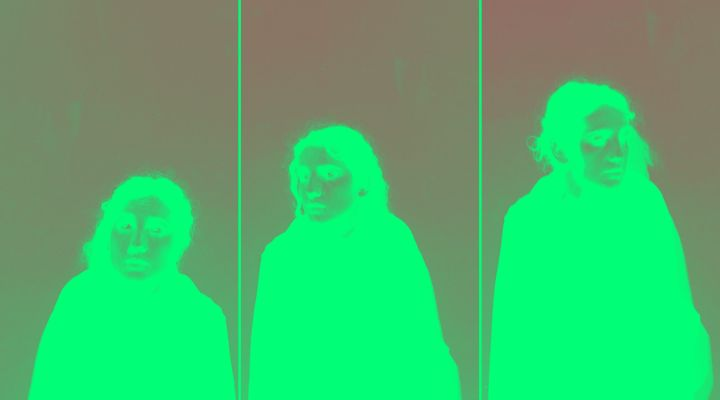
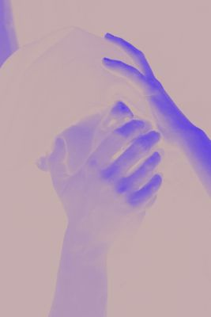

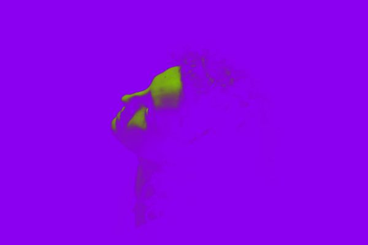
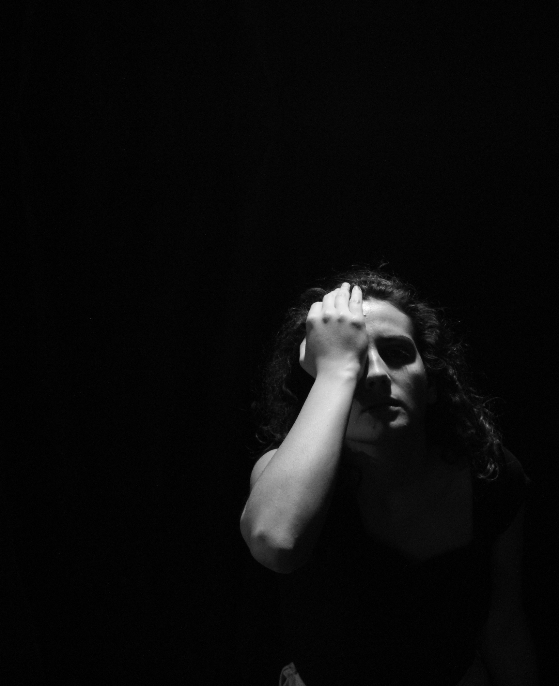

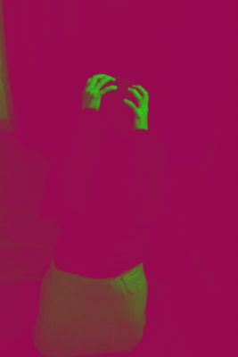
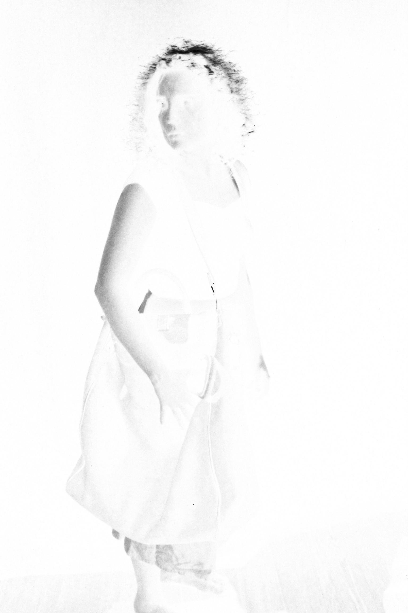
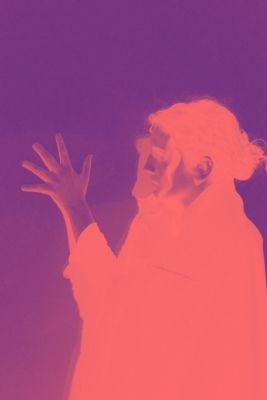